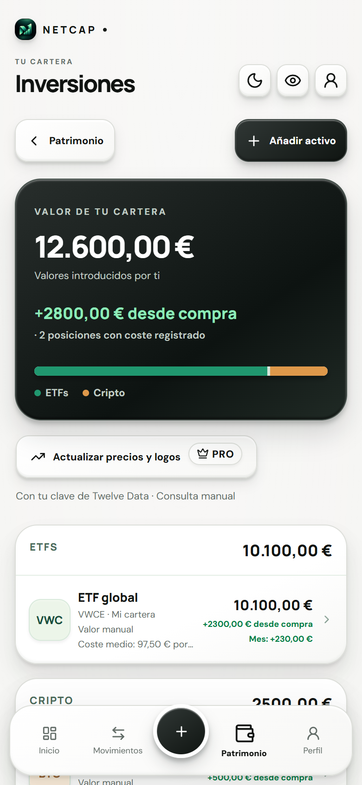
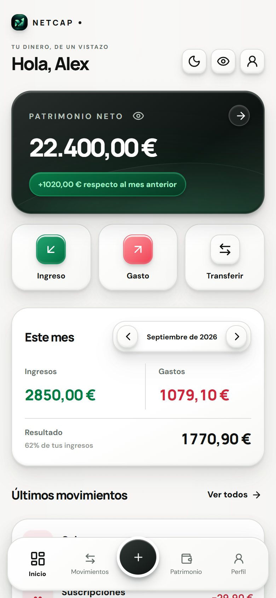
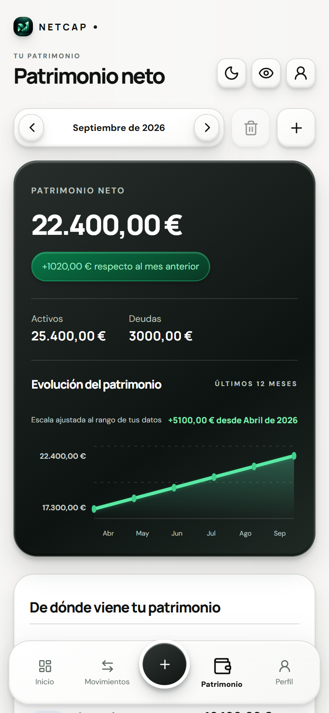
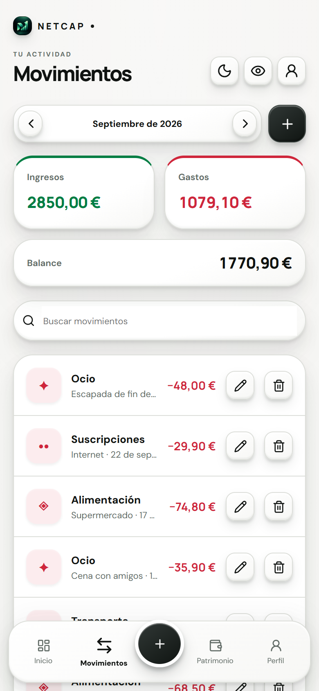
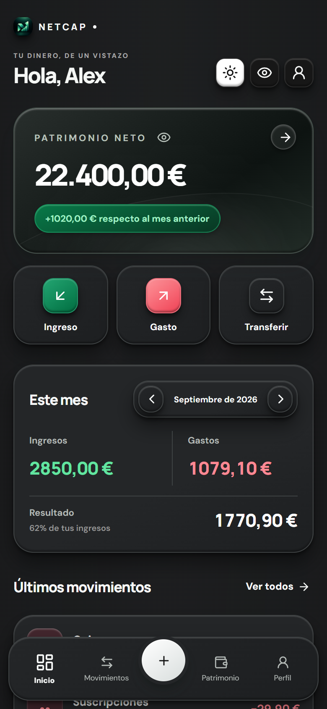

Tu patrimonio, de un vistazo.
Reúne cuentas, inversiones, bienes y deudas. Consulta tu valor neto, cómo cambia y qué hay detrás de cada cifra.
Cuentas, gastos, inversiones y deudas.
Conecta los números de tu vida en un solo lugar.


Del café de hoy a tu patrimonio de mañana. NetCap reúne tu actividad diaria y tu evolución financiera.
Reúne cuentas, inversiones, bienes y deudas. Consulta tu valor neto, cómo cambia y qué hay detrás de cada cifra.
Registra ingresos, gastos y transferencias. Importa un CSV, revisa duplicados y concilia tus saldos.
Define tu meta de ahorro y sigue el progreso. Convierte una intención en algo que puedes medir.
Modo claro y oscuro, varias monedas y una interfaz disponible en español, inglés, francés, alemán y portugués.
Una interfaz pensada para encontrar lo importante. Capturas reales de la app con datos ficticios.



Los perfiles y registros se guardan en el almacenamiento privado del móvil. No necesitas crear una cuenta de NetCap ni entregar tus credenciales bancarias.
Las cotizaciones, divisas, compras y copias del sistema pueden usar servicios externos. El OCR procesa las imágenes localmente; ML Kit puede enviar métricas técnicas a Google. El bloqueo biométrico no cifra por sí mismo los registros.
Leer la política de privacidadUn plan gratuito para empezar y una suscripción PRO para ampliar tus herramientas. Consulta los precios y condiciones en Google Play.
Las herramientas esenciales para llevar tus finanzas.
Más capacidad, análisis y herramientas para planificar.
No. Tú introduces los datos o importas archivos CSV. NetCap no solicita claves bancarias ni accede a tus cuentas reales.
Sí, para registrar movimientos y consultar los datos guardados. Las consultas de mercado, tipos de cambio y compras requieren conexión.
No hay una nube propia ni sincronización de NetCap. Puedes exportar y restaurar una copia cifrada. Android también puede restaurar perfiles mediante su copia del sistema, según el dispositivo y tus ajustes.
No. NetCap es una herramienta de registro y seguimiento. No ejecuta operaciones ni ofrece asesoramiento personalizado de inversión.
Consulta la disponibilidad en Google Play. El acceso durante las pruebas puede requerir una invitación al grupo de testers.
Una forma de ver tu dinero que empieza por ti.
Ver en Google Play Disponibilidad según el país y el canal de pruebas de Google Play.